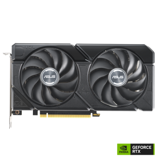

GeForce RTX 4060 — это начальная модель в линейке RTX 4000, предлагающая отличную производительность для игр в разрешении Full HD. Она построена на архитектуре Ada Lovelace и поддерживает технологии Ray Tracing и DLSS 3, что делает ее отличным выбором для геймеров, которым важно соотношение цены и качества.

NVIDIA GeForce RTX 4060 Ti — более мощная версия 4060, подходящая для геймеров, которым нужно больше производительности. Поддерживает все функции, свойственные серии RTX 4000, и идеально подходит для игр в разрешении 1440p с высокими настройками графики.
